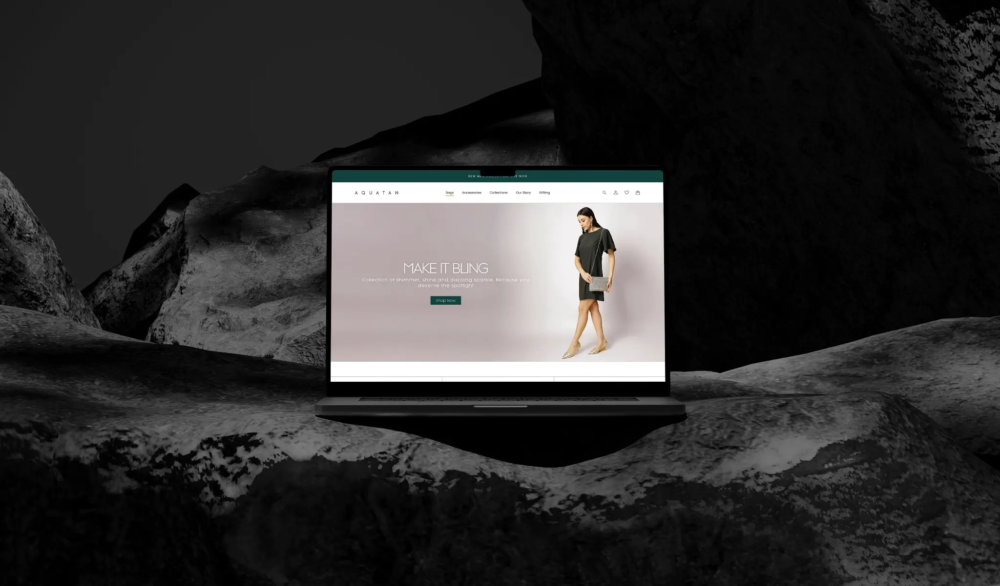
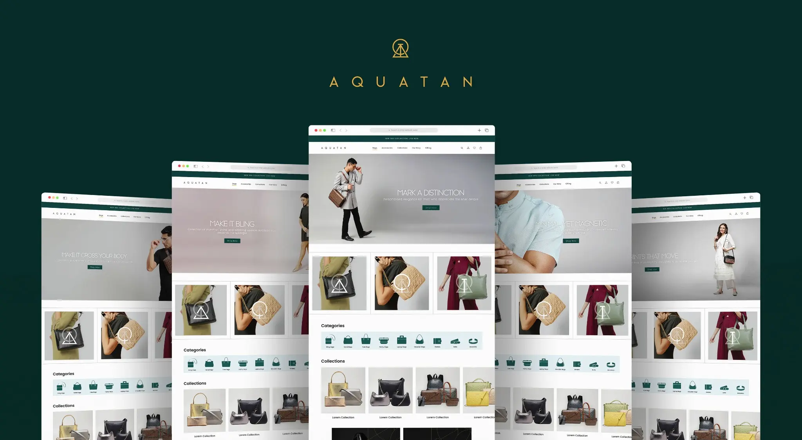
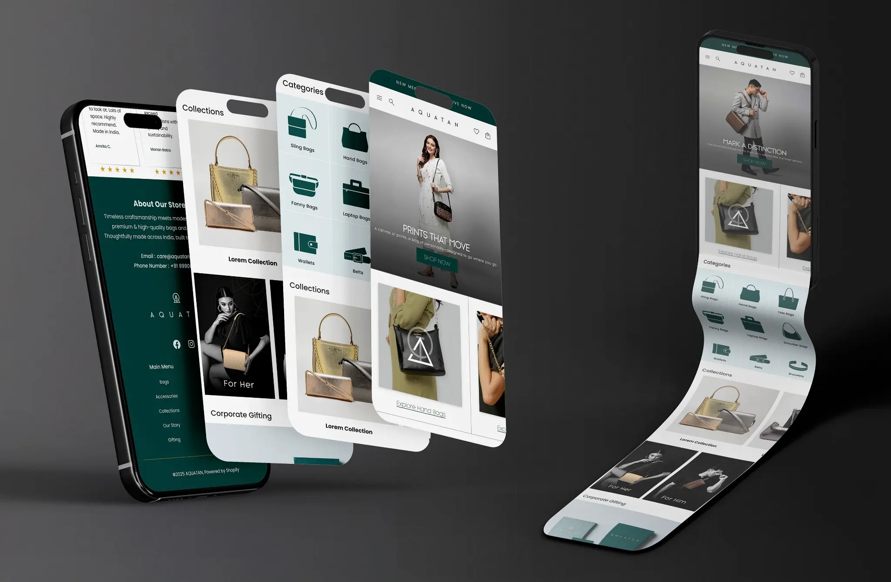
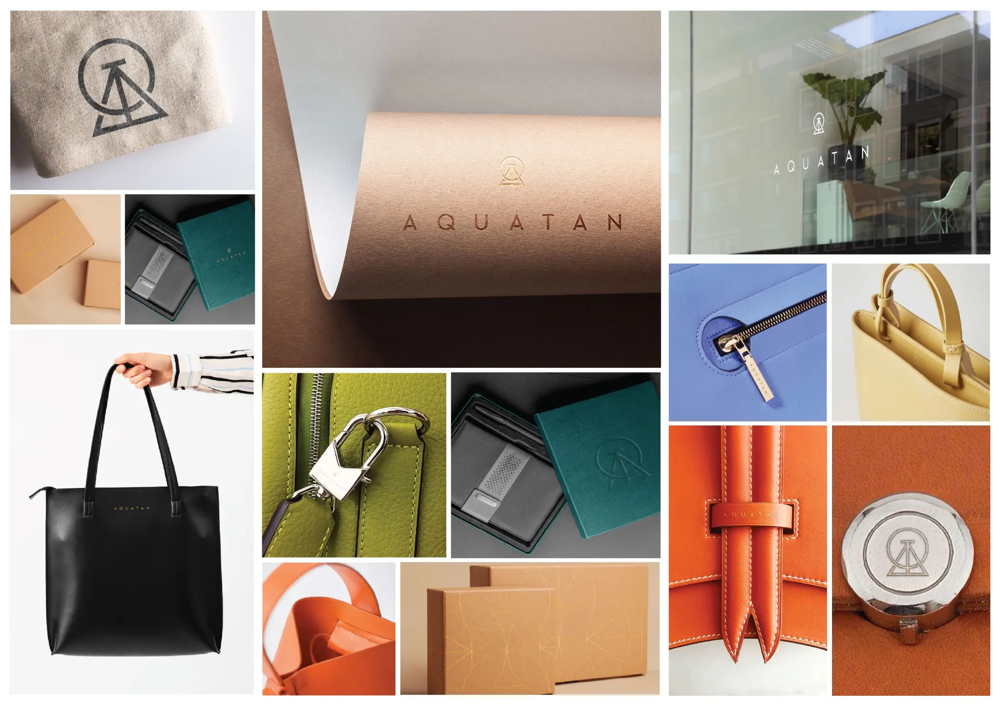

Clear discovery
Categories and collections create direct paths into a broad accessories catalogue.
A premium digital storefront for an accessories label—bringing product discovery, responsive shopping and a refined brand language into one coherent customer experience.
Visit live website
The interface uses Aquatan’s deep green, restrained typography and product-led imagery to create a premium first impression. Navigation remains quiet and clear, letting collections, categories and products carry the experience.
Desktop and mobile layouts share the same visual logic while adapting information density, navigation and product discovery to each viewport.


Categories and collections create direct paths into a broad accessories catalogue.
Strong imagery and disciplined spacing keep the merchandise at the centre.
The same brand character carries from wide desktop layouts to focused mobile journeys.
The live store brings together handbags, sling bags, totes, wallets, belts and collection-led merchandising. Promotional messaging, product cards, quick views and trust signals support a practical route from browsing to purchase.
Explore Aquatan online ↗The proposal extends Aquatan’s monogram, deep green and metallic detailing into tactile packaging and product touchpoints—creating a consistent unboxing and ownership experience.
